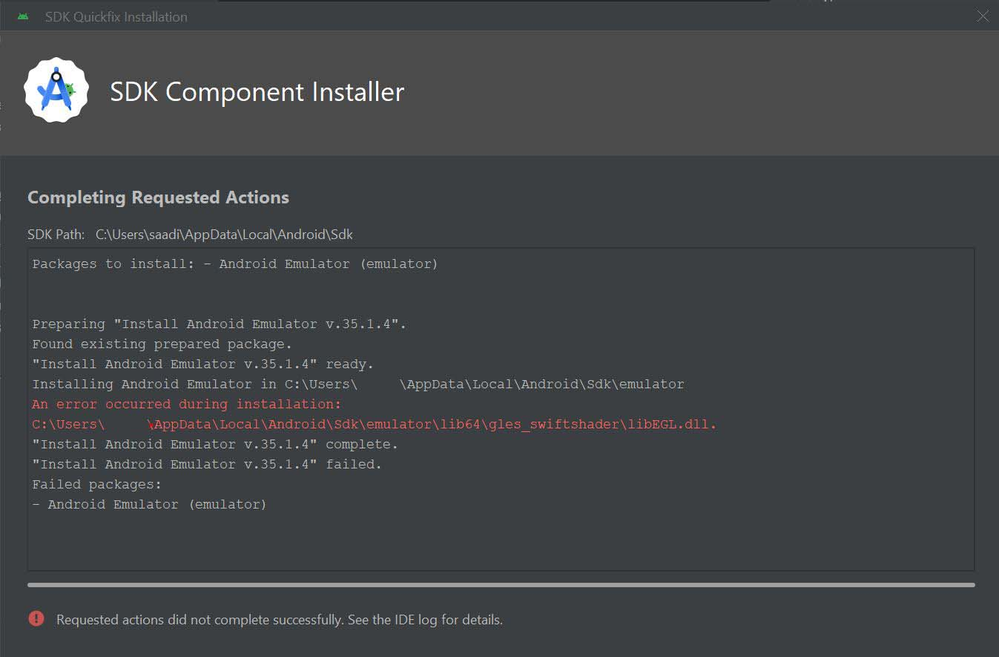

Solutions
1. Wipe the data from the AVD. On the Device Manager (
Tools < Device Manager), stop the device. Then click those three vertical dots next to it, and click Wipe Data. This one should get rid of small problems caused
by the emulated software. Note that this can only be done when the AVD is stopped.New Problem
Alright, now my AVD isn't booting up at all. It's stuck on the 'Connecting to the Emulator' screen.
2. Delete the device. You're gonna need to stop the device, but Android Studio might not wanna do it. Spoken from experience. So ctrl+alt+delete your way to the task manager, and check all processes starting with E. If there's one called Emulator with an icon a bit like this one, terminate it.
Hold up though, there's more processes related to the emulator that you need to end. AVD processes that I've encountered in the Task Manager are Emulator, something called qemu_system, and something called adb.exe. There's also Android Studio, but we wanna keep that one running. Once those processes are out of the picture, fire up Android Studio again, go to the Device Manager, click on those three dots next to your AVD, and delete the device. If the thing prompts you that not all the files were deleted, it's not too big a deal. If they bother you, you can delete them by clicking 'Open Directory' on that notification, and deleting them through the explorer, but you won't be allowed if you haven't terminated those processes I told you about.
Once you're done with this, click the '+' sign on the Device Manager (or 'Add Device' on older versions), and go through your usual steps of creating a device.
New Problem
My new device is still forever stuck on 'Connecting to the Emulator'. No joke, I left this thing going while I went to watch an episode of Narcos, and it didn't budge. Pablo Escobar built an evil empire and got freaking shot and my AVD still didn't want to work.

3. Update the AVD. Even if you're on the latest version of Android Studio, that doesn't mean its components are up to date. Including the AVD. To check for updates, go to
Help < Check For Updates. If an
update is available, you should get a notification on the bottom-right, on which you can click the text 'update'. An installer will boot up, make sure you give it administrator permissions, as well as the terminal if it pops up.
Oh, what's that? The installer had a problem? Check that all the AVD processes I described on step 2 are terminated. If you terminate one process but not all, you might get different error messages. Wanna see the log? Go
Help <
Show log in explorer. I didn't find the info in that file incredibly helpful though.Solved!
Cool, this did it for me this time! Now my emulator boots up, and I can keep going about my search engine stuff. Again, my best guess is that whatever update Microsoft rolled out last night was incompatible with the AVD version I had. Away with backwards compatibility I guess.

However, there's been times where even this didn't fix my issue. So I'll provide two final options for you.
In case it didn't work:
4. Restart the PC. Yeah yeah, hAvE yOu tRiEd tUrNiNg iT oFf aNd tHeN tUrNiNg iT oN aGaIn? Trust me, it's worth a shot at least trying it before the next step. First check for the update on step 4, then restart.
5. Uninstall Android Studio and Install it again. And make sure when you uninstall you check the option to get rid of all your user settings. This is the nuclear option when working with any computer. Getting rid of everything and going back to something that you know for a fact works. It feels excrutiating, but it helps you figure out what's wrong.
Hopefully that was a nice little guide for anyone working Windows that's either new to Android Studio, or doesn't know its ins and outs because they only use it to manage the emulator.
Disclaimer: Emulators are difficult to code, and I may be poking fun at them, but I do not take them for granted. Please do not smite me, oh mighty Google overlords.